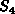
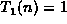
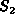
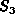
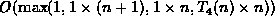
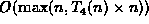
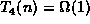
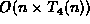
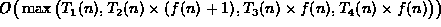

Data Structures and Algorithms
with Object-Oriented Design Patterns in Java
Data Structures and Algorithms
with Object-Oriented Design Patterns in JavaIn this section we present some simple rules for determining a big-oh upper bound on the running time of the basic compound statements in a Java program.
Rule  follows directly from Theorem .
The total running time of a sequence of statements is equal to the
sum of the running times of the individual statements.
By Theorem ,
when computing the sum of a series of functions
it is the largest one (the ) that determines the bound.
follows directly from Theorem .
The total running time of a sequence of statements is equal to the
sum of the running times of the individual statements.
By Theorem ,
when computing the sum of a series of functions
it is the largest one (the ) that determines the bound.
Rule appears somewhat complicated due to the semantics
of the Java for statement.
However, it follows directly from Theorem .
Consider the following simple counted do loop .
for (int i = 0; i < n; ++i)
;
Here int i = 0, so its running time is constant ( );
 is i < n, so its running time is constant ( ); and
 is ++i, so its running time is constant ( ).
Also, the number of iterations is I(n)=n.
According to Rule ,
the running time of this is ,
which simplifies to .
Furthermore, if the loop body does anything at all,
its running time must be .
Hence, the loop body will dominate the calculation of the maximum,
and the running time of the loop is simply .
If we don't know the exact number of iterations executed, I(n),
we can still use Rule provided we have an upper bound,
I(n)=O(f(n)), on the number of iterations executed.
In this case, the running time is
.
Rule follows directly from the observation
that the total running time for an if-then-else statement
will never exceed the sum of the running time of the conditional test,
 , plus the larger of the running times of the then part, ,
and the else part, .
, plus the larger of the running times of the then part, ,
and the else part, .
 Copyright © 1998 by Bruno R. Preiss, P.Eng. All rights reserved.
Copyright © 1998 by Bruno R. Preiss, P.Eng. All rights reserved.